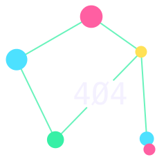
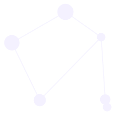
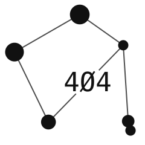
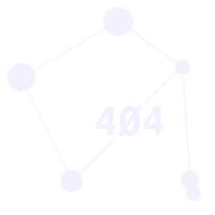
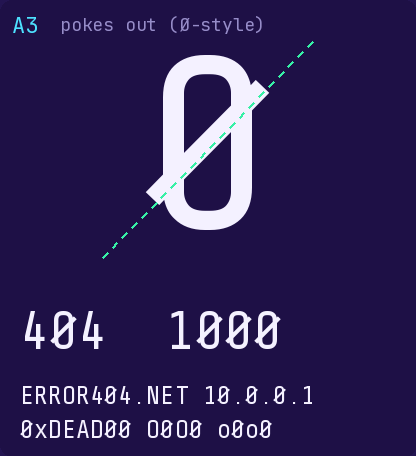
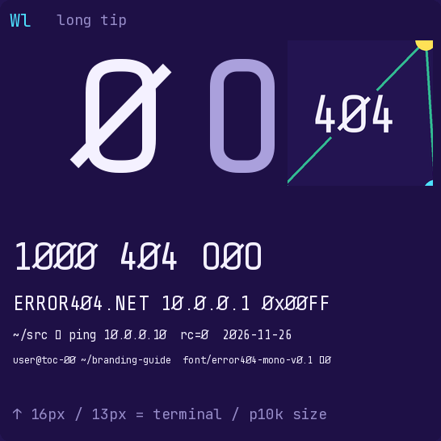
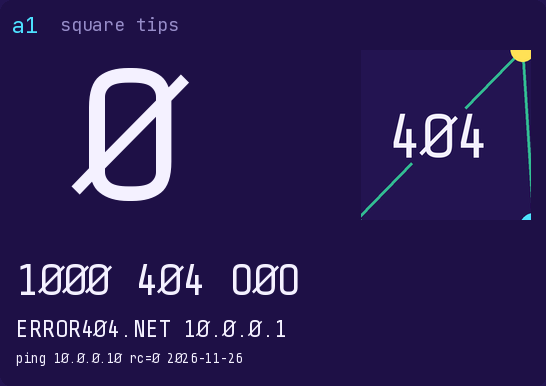
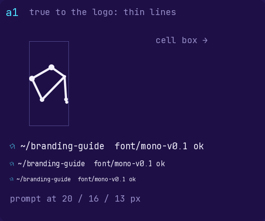
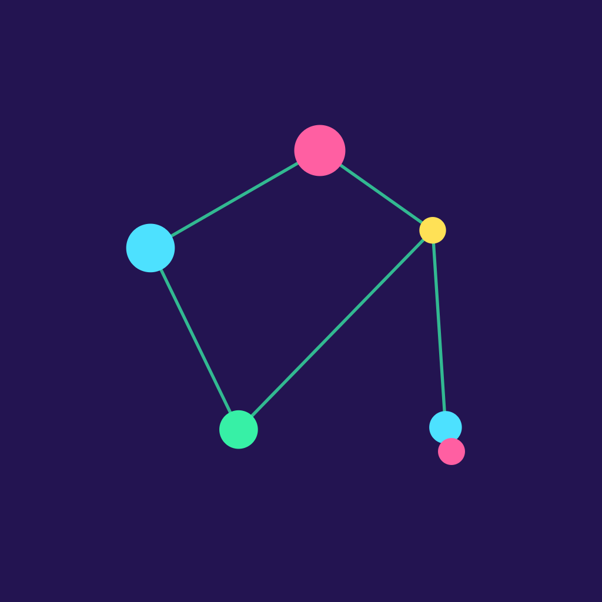
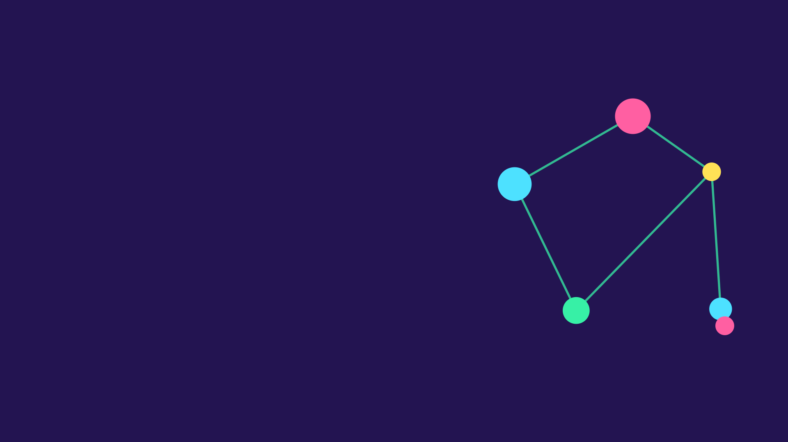

Error404 is my handle. I had it in the 90s, took it back when I found the domain, and got into cybersecurity. The name carries the scene it came from. This site is the system built around it: the mark, the colour, the type, and the rules for using them.
Added 2026-11-26 (01e02f1, as the story section) · Rewritten 2026-11-26, not committed
Error404 was my handle in the 90s, when I was a script kiddie. The warez scene influenced the design choices here, and my repos use NFO-style READMEs. When I found the domain and got back into cybersecurity, I took it back. The name is the HTTP status code for "not found," and the scene it came from is part of the joke.
The mark is my approximation of the Libra constellation, adjusted by hand. I'm a Libra, so the scales. I'm a licensed ham, so the zero is from ham radio, and I wanted it woven into the 404 status code. Because this is a .net domain, I wanted a mesh-network look. I combined several star layouts into one graph.
I couldn't find a font with a zero that matched, so I drew one. AI tools helped me get there faster. Picking colours and drafting glyphs by hand would have taken hours.
Added 2026-11-26 (01e02f1, as the voice section) · Rewritten 2026-11-26, not committed
You're reading one practitioner's system. It is plain, exact, and a little bit in on the joke. Say what the rule is, then why. Keep sentences short and each one to one idea.
The tagline is locked as written. It appears on the site, in the PDF guide, and in marketing. It never appears in outbound email.
Added 2026-10-05 (f73154d) · Last updated 2026-11-26 (1719eb2 Logo and Icon; a9ae62e spec lock)
The mark is a node-link graph: my approximation of the Libra constellation, adjusted by hand and combined into a mesh-network look for a .net domain. The slashed zero sits in the open space of the scales as 4Ø4.
Two marks, one geometry. The Logo carries the numerals and reads at 128 px and up. The Icon drops the numerals and the zero. It is for small and hard-to-see places: favicons, app icons, avatars under 128 px, tabs, and OBS corners.

Use the multicolour mark by default. Black on light backgrounds, white on dark. The full set of files, the watermark, the Entra cuts, and the lockups are in BRAND.md.


Every connecting line is a single uniform colour (mint #37F0A6 on the multicolour mark; the mark's own solid colour on the black and white cuts). Node circles stay multicolour.
The line that would cross the Ø in "4Ø4" is split into two collinear segments at the exact angle of the glyph's own diagonal slash, measured from the rendered glyph (Canny edge detection and a Hough line fit on the isolated slash, converged on a 45.75° slope) rather than eyeballed. It is then verified with a zero-pixel-overlap check between the line art and the text ink before being called correct.
Added 2026-10-05 (f73154d) · Last updated 2026-11-26 (01e02f1)
The palette is sampled from a real arcade reference. One background, one foreground, and at most two accents on any surface. Each accent keeps one job.
Display cuts of the mark only. They glow against a near-black backdrop and never appear in text, UI, or links.
#170C38 as an accent.Added 2026-10-05 (f73154d) · Last updated 2026-11-26 (5f7c7c3, Error404 Mono rewrite)
Error404 Mono is the house face. It has a slashed zero, and its Ø matches the mark. Every surface also declares a web-safe fallback, because fonts fail to load.
Every zero carries a slash. The Ø slash runs at 45.75°, the constellation edge angle.




font-family: "Error404 Mono", Consolas, "Liberation Mono", "Courier New", monospace;
font-family: "Courier New", Courier, monospace;
"Courier New", monospace
Error404MonoNF, monospace
Nerd Font icons and the constellation as the OS icon. Paste into a terminal. Files come from this site.
Paste into a terminal. Files come straight from this site. After installing, choose Error404Mono Nerd Font in the terminal's font setting (iTerm2: Settings → Profiles → Text; Terminal.app: Settings → Profiles → Font; GNOME Terminal: Preferences → Profile → Custom font). Restart open terminals so they pick it up.
macOS: terminal font (Nerd Font, Regular + Bold)
for w in Regular Bold; do
curl -fsSL -o ~/Library/Fonts/Error404MonoNerdFont-$w.ttf \
https://branding.error404.net/font/nerd/Error404MonoNerdFont-$w.ttf
done
Linux: terminal font (Nerd Font, Regular + Bold)
mkdir -p ~/.local/share/fonts
for w in Regular Bold; do
curl -fsSL -o ~/.local/share/fonts/Error404MonoNerdFont-$w.ttf \
https://branding.error404.net/font/nerd/Error404MonoNerdFont-$w.ttf
done
fc-cache -f && fc-list | grep -i error404
Documents: plain Error404 Mono, no icons (macOS path; on Linux use ~/.local/share/fonts)
for w in Regular Bold; do curl -fsSL -o ~/Library/Fonts/Error404Mono-$w.ttf https://branding.error404.net/font/Error404Mono-$w.ttf done
Powerlevel10k: Nerd Font icons + the constellation as the OS icon
cp ~/.p10k.zsh ~/.p10k.zsh.bak perl -0pi -e ' s/POWERLEVEL9K_MODE=\S+/POWERLEVEL9K_MODE=nerdfont-v3/; s/(^[ \t]*#[ \t]*typeset -g POWERLEVEL9K_OS_ICON_CONTENT_EXPANSION=.*\n)/$1 typeset -g POWERLEVEL9K_OS_ICON_CONTENT_EXPANSION=\$\x27\\uE404\x27\n/m; ' ~/.p10k.zsh exec zsh
Settings go inside the config body, not appended at the end: anything after the final p10k reload is ignored. Check that os_icon is in POWERLEVEL9K_LEFT_PROMPT_ELEMENTS. It is by default.
Licence: SIL OFL 1.1. Icon sets keep their own licences (font/licenses/). Credits are in the README.
Added 2026-10-05 (f73154d) · Last updated 2026-11-26 (01e02f1, renamed Machine mode)
Every surface is one of two modes. Digital is for a person looking at a screen. Machine mode is for everything a system sends, and for paper.
:: / ~/ notation carry the identityAdded 2026-10-05 (f73154d) · Generator last updated 2026-11-26 (01e02f1)
A signature is sent by a person, so it is not Machine mode. It gets one light touch of color. The plain-text form below is also the fallback when HTML is stripped.
<Your Name> ~/ <you@error404.net> :: <phone> ERROR404.NET
Format shown above; build the real one with the generator below — your details stay in your browser and are never published to this site. The locked tagline is not part of the signature — a "!ignore →" line going out on every outbound email risks a false-positive flag from AI-based mail security scanners at the recipient's end, so it's reserved for the site, marketing, and the PDF guide instead.
The HTML version for the actual mailbox — light-touch color (the mark plus a single accent rule), not the full palette, since a signature rides on every outbound message. Fill in your details, hit Copy signature, then paste into Outlook: Settings → Mail → Compose and reply → Email signature (new Outlook / web) or File → Options → Mail → Signatures (classic Outlook). The mark is hosted on this site, so it keeps working through replies and forwards. Nothing you type leaves your browser.
Pasting into the Outlook editor keeps the formatting and the hosted image. If Outlook ever pastes it as
plain text, use Paste → Keep Source Formatting. For Exchange-admin / transport-rule
deployment use Copy HTML source or the .htm download.
Static placeholder versions live in
email-templates/.
Added 2026-10-05 (f73154d) · Last updated 2026-11-26 (01e02f1)
The same Libra symbol as the email signature, ready for your profile. Choose a treatment, check the square and circle crops, then download the PNG.

Upload the PNG in Gravatar, preserve the padding in the crop, and assign it to your verified email address. Select a G rating for these brand marks. Downloads do not change your account automatically.

Download background · 1920 × 1080Optional background artwork. Check the crop in your profile design settings. All assets and setup instructions · Gravatar support
Added 2026-10-05 (f73154d) · Last updated 2026-11-26 (01e02f1)
Ready-to-use files built from this system — Word, PowerPoint, HTML email, and a dedicated report format.
Every file uses <Bracketed> placeholders, never real contact details.
Browse them all: logos/, entra-m365/, office-templates/, email-templates/, social/, discord/, Hugo-template/.
layouts/ and static/ into any Hugo site; set params.author and params.descriptionAdded 2026-10-05 (f73154d, Technitium-Blocked) · Last updated 2026-11-26 (a9ae62e, font swap)
A splash for Technitium DNS's Block Page app, in the Arcade New Wave look. It is dynamic: the DNS server points a blocked name at the block server, so the page reads the blocked domain straight from the address bar and shows it, with local time, an optional category tag, and a pre-filled "request access" link. Single self-contained file — no CDNs, safe to serve from a DNS box. Open the live page · setup notes.
This page is a summary. BRAND.md and DESIGN.md hold the full rules. Source is at github.com/Error404-net/Branding-Guide.
Version 2026-11.